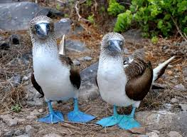

Welcome to the sad homeless animal shelter. Please help!
The blue-footed booby (Sula nebouxii) is a marine bird native to subtropical and tropical regions of the eastern Pacific Ocean. It is one of six species of the genus Sula known as boobies. It is easily recognizable by its distinctive bright blue feet, which is a sexually selected trait. Males display their feet in an elaborate mating ritual by lifting them up and down while strutting before the female. The female is slightly larger than the male and can measure up to 90 cm (35 in) long with a wingspan up to 1.5 m (5 ft).